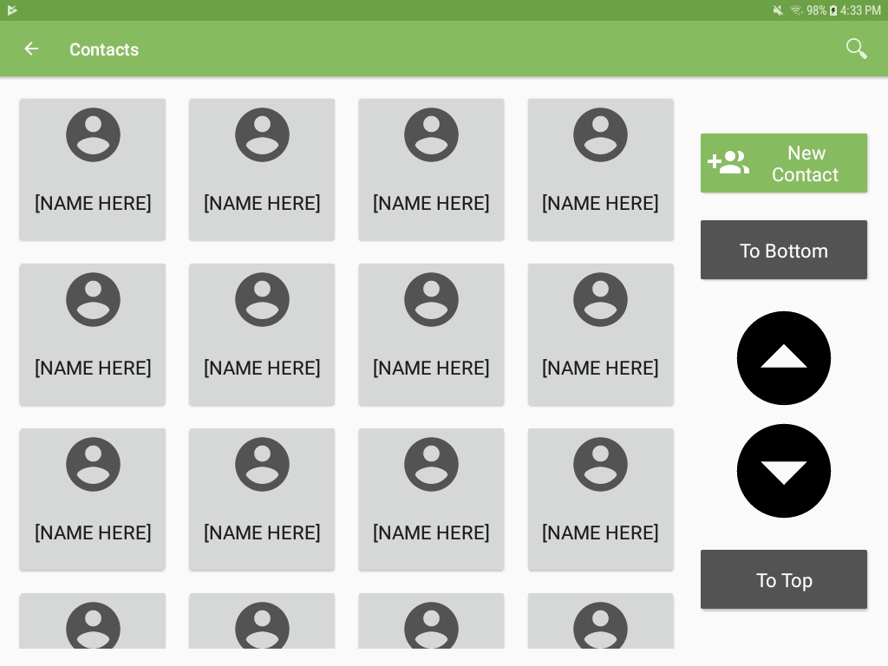

To use InterAACt, you need to have a Google account. You can use this account to sign
into the application. For the best experience, it is recommended that you use Google
Chrome as your device's default browser, set your device's screen orientation to
landscape mode, and that your device is a tablet (8-inch screen or larger).
Make sure that you are connected to WiFi or using cellular data.
Login to InterAACt
Press the "Sign in with Google" button.
Choose a Google account to sign in with. If none are listed, you either don't have any
Google accounts or are not currently signed into any on your device.
Once you're logged in, your device's screen orientation will change to landscape mode.
Contacts

Viewing your contacts
On the home page, press the "View Contacts" button
A list of your contacts should appear.
Creating a new contact
In the upper right-hand corner of your contact list, locate and press the "Create
Contact" button.
Enter the contact's name & email address.
Save the contact by pressing the floppy disk icon on the top right-hand corner of
the screen.
You will be directed back to the home page, where you can press "View Contacts" to
see your new contact.
Searching for a contact
In the top right-hand corner of your contact list, locate and press on the magnifying
glass icon.
Type in your contact's name or email address.
Your contact's information should appear.
Deleting a contact
Press on the contact you want to delete.
In the top right-hand corner, select the three dot icon.
Press on the "Delete Contact" menu item.
The contact should be removed from your contact list and you will be directed to the
application's home page.
Scrolling
Use your finger or the black arrows to scroll up or down through your contact list.
Press the "To Bottom" to scroll down to the bottom of your contact list.
Press the "To Top" to scroll down to the top of your contact list.
Calling
Placing calls
Press on a contact from your contact list to call.
Press the green button with phone icon to right of your contact's email address.
Make sure your media volume at about 70% or higher. For example:
Choose an in-call communication method to use during the call:
Symbol board* - An array of buttons with symbols that,
when pressed, will display words that communicate what the symbol is portraying.
Each button displays what will be converted to speech below the symbol image.
Each time a symbol button is pressed, a new word or phrase will be added to a text
box.
Standard keyboard* - Your device's keyboard that can
be used to construct sentences to be sent using text-to-speech.
No keyboard - For those who want to have a traditional phone call,
without text-to-speech communication.
*During a call, use the "Play" button to send the phrase or sentence
you've put together using the communication method you've chosen.
Use the "Clear" button to erase all of the words you've typed.
Receiving calls
Choose a communication method to use during the call. (See #4 in "Placing calls" for more
information on choosing an in-call communication method).
Make sure your media volume at about 70% or higher. For example: (insert example pic).
Account Details
On the home page, press the "Account Details" button.
Your name and email address should be listed. You can also access this userguide from
here.


 Standard keyboard* - Your device's keyboard that can
Standard keyboard* - Your device's keyboard that can